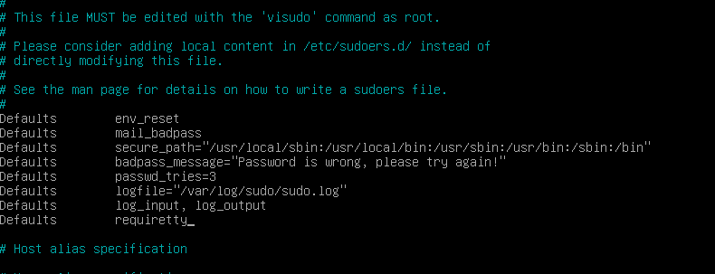
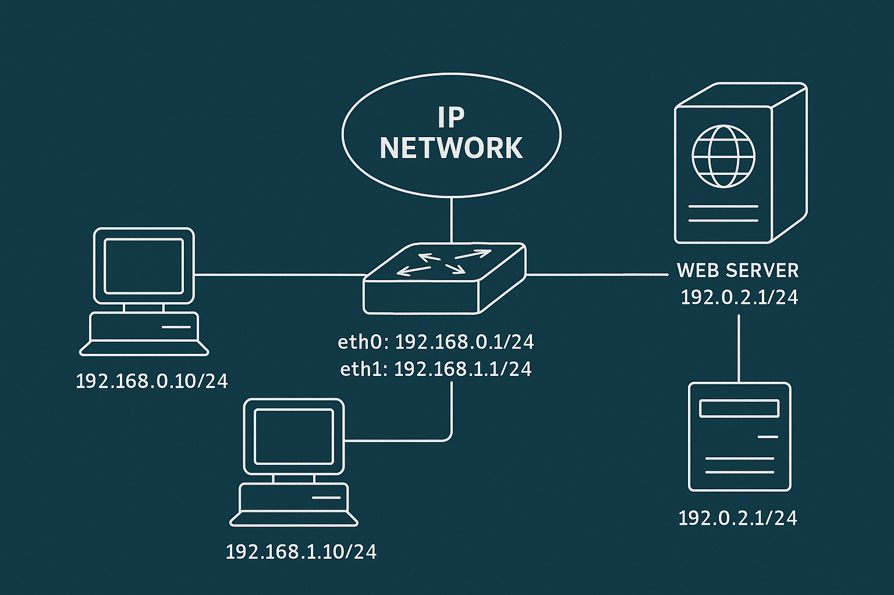
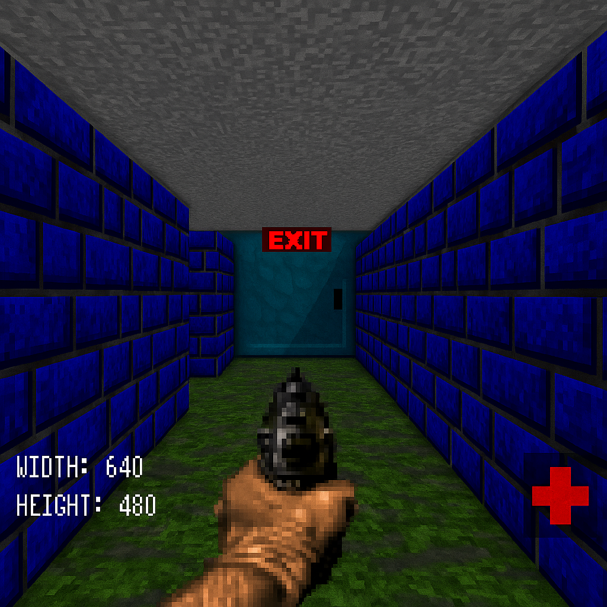
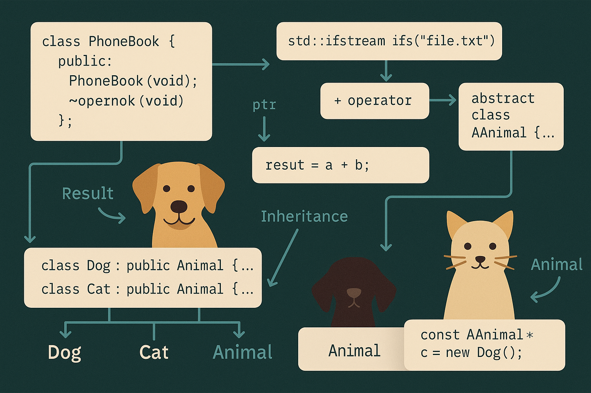
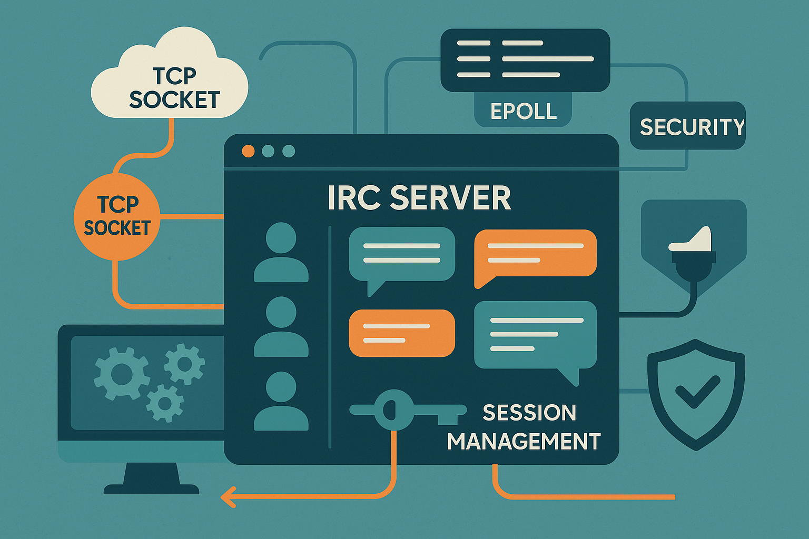

borntoberoot projesi, sıfırdan bir Linux sanal makine kurulumuyla başlar ve sistemin güvenli,
işlevsel bir hale getirilmesini hedefler. Kullanıcı ve grup yönetimi, SSH konfigürasyonu, sudo
yetkilendirmeleri, firewall (UFW) kurulumu, parola politikaları ve servis yönetimi gibi temel sistem
yönetim adımlarını uyguladım.
Ayrıca Apache/Nginx sunucusu kurulumları, dosya izinleri düzenlemeleri ve cronjob oluşturulması gibi
ileri sistem yönetim konularını da pratik ettim. Projede önemli olan yalnızca teknik işlemleri
yapmak değil, sistemin güvenliğini ve sürdürülebilirliğini sağlamak için mantıklı yapılandırmalar
oluşturmaktı.

net_practice projesi, temel ağ iletişimi kavramlarının uygulamalı öğrenilmesini sağlamak için
geliştirilmiştir. IP adresleme, subnetting, router ve switch yapılandırmaları, NAT, DHCP gibi
protokollerin anlaşılması ve simülasyon ortamında uygulanmasını içerir.
Projede farklı topolojiler tasarlayarak, router'lar arasında yönlendirme kuralları (static route),
switch yapılandırmaları ve IP/Mask hesaplamaları gerçekleştirdim. Ağ iletişim temellerini teoriden
pratiğe taşıyarak pekiştirdiğim kritik bir çalışmaydı.

cub3d projesi, Wolfenstein 3D tarzında bir raycasting motoru geliştirerek temel 3D grafik
programlama prensiplerini öğretir. 2D harita üzerinde 3D görselleştirme sağlayarak, basit duvar
kaplamaları (texture mapping) ve oyuncu hareketi simülasyonu yapılır.
Bu projede MiniLibX kullanarak pencere yönetimi, event handling, kamera açısı hesaplamaları ve
ışık/renk efektleri gibi konularda deneyim kazandım. Bellek yönetimi ve performans optimizasyonu da
önemliydi.

CPP Modules 0-4 projeleri, C++ dilinde nesne yönelimli programlama (OOP) kavramlarının sistematik
olarak öğretilmesini amaçlar.
- Module 00: Sınıflar, nesne oluşturma ve temel özellikler (constructor,
destructor) kullanılarak basit bir telefon rehberi uygulaması geliştirildi.
- Module 01: Dosya işlemleri, referanslar ve heap/stack nesne yönetimi pratik
edildi.
- Module 02: Operatör overloading, farklı veri yapıları, sabit sınıflar ve
shallow/deep copy kavramları işlendi.
- Module 03: İnheritance (kalıtım), çoklu kalıtım, diamond problem ve virtual
keyword’ün doğru kullanımı üzerine odaklanıldı.
- Module 04: Interface, polymorphism, abstract class, dynamic casting gibi ileri
seviye OOP teknikleriyle "Animal", "Dog", "Cat" sınıflarıyla gerçek dünya modellemesi yapıldı.

ft_irc projesinde, çoklu kullanıcı desteği sunan, IRC (Internet Relay Chat) protokolüne uygun
çalışan bir sunucu uygulaması geliştirdim. Socket programlama, epoll/kqueue ile event-driven
bağlantı yönetimi, kullanıcı oturumu yönetimi ve kanal sistemleri gibi ileri ağ programlama
kavramlarına odaklandım.
Proje boyunca TCP soketleriyle bağlantı kurma, mesaj protokollerini doğru işleme, çoklu thread
yönetimi (veya non-blocking IO) gibi konular üzerine yoğunlaştım. Ağ güvenliği ve mesaj doğrulama
mekanizmalarını da uyguladım.